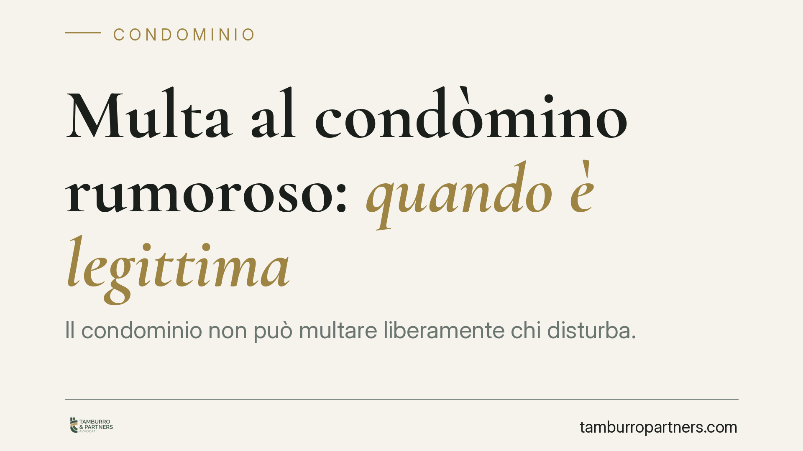

Multa al condòmino rumoroso: quando è legittima
Il condominio non può multare liberamente chi disturba. La sanzione pecuniaria è legittima solo se prevista dal regolamento di natura contrattuale e resta entro i limiti di legge: 200 euro, elevabili a 800 in caso di recidiva. Vediamo cosa serve davvero perché la multa regga, quali sono i vincoli e come reagire se la ricevete.

Il fatto e perché conta
Un condòmino tiene comportamenti rumorosi. L'assemblea decide di sanzionarlo con una multa. Domanda ricorrente: quella sanzione è valida?
La risposta è netta ma condizionata. Il condominio può applicare una multa pecuniaria, ma soltanto se ricorrono precise condizioni formali. In loro assenza, la sanzione è illegittima e può essere impugnata.
Inquadramento normativo
La base è l'art. 70 delle disposizioni di attuazione al codice civile. La norma consente al regolamento di condominio di prevedere, per le infrazioni alle sue disposizioni, il pagamento di una somma. L'importo è fissato in un massimo di 200 euro, che sale fino a 800 euro in caso di recidiva, cioè quando la violazione si ripete.
Due precisazioni essenziali.
Prima: la sanzione deve essere espressamente prevista dal regolamento. Non basta un generico divieto di rumore. Serve una clausola che colleghi a quel divieto una conseguenza economica.
Seconda: il regolamento deve avere natura contrattuale, non solo assembleare. Il regolamento contrattuale è quello approvato all'unanimità o accettato da tutti i condòmini nei rispettivi atti di acquisto. Solo questo tipo di regolamento può incidere sui diritti individuali dei singoli, imponendo obblighi e sanzioni. Un regolamento approvato a semplice maggioranza non può introdurre voci sanzionatorie di questo genere.
Implicazioni pratiche
Per il condòmino che riceve la multa, il punto di verifica è duplice.
Occorre controllare se il regolamento in vigore contempla davvero la sanzione pecuniaria per quella specifica infrazione e in che misura. Se la clausola manca, la multa non ha fondamento.
Va poi verificato che l'importo rispetti i tetti di legge. Una multa che superi i 200 euro senza recidiva, o gli 800 euro anche in presenza di recidiva, è per ciò stesso illegittima nella parte eccedente.
Resta poi il profilo procedurale. La decisione di applicare la sanzione deve passare per una delibera dell'assemblea condominiale. L'amministratore non può irrogare multe di propria iniziativa: il suo ruolo è dare esecuzione a quanto l'assemblea ha deliberato nel rispetto del regolamento.
Un'ultima annotazione. La multa condominiale ha natura privatistica: è una conseguenza pattizia della violazione del regolamento. È cosa diversa dalle tutele generali contro le immissioni rumorose (art. 844 c.c.) e dalle eventuali responsabilità in sede penale o amministrativa. Chi subisce il disturbo può quindi agire su più fronti, ma il condominio in quanto tale dispone solo dello strumento sanzionatorio regolamentare.
Cosa fare in concreto
- Recuperate il regolamento e verificate se esiste una clausola sanzionatoria espressa per il rumore e con quale importo.
- Accertate la natura del regolamento: solo quello contrattuale, approvato all'unanimità o accettato negli atti d'acquisto, legittima le multe individuali.
- Controllate i limiti: 200 euro per la prima violazione, fino a 800 euro solo in caso di recidiva documentata.
- Chiedete la delibera assembleare che ha disposto la sanzione e verificate la regolarità di convocazione e verbalizzazione.
- Valutate l'impugnazione nei termini di legge se la multa manca di base regolamentare, supera i tetti o non deriva da valida delibera; conservate ogni comunicazione ricevuta.
Per chi amministra, il messaggio è speculare. Prima di sanzionare, consigliamo di riscontrare la copertura regolamentare della multa, la corretta quantificazione e il passaggio in assemblea. Una sanzione irrogata senza questi presupposti espone il condominio al rischio di soccombere in caso di contestazione, con aggravio di costi.
Il rumore molesto resta un problema serio della vita condominiale. Ma la reazione, per essere efficace, deve muoversi entro i binari che la legge ha tracciato. Una multa formalmente corretta è uno strumento di deterrenza; una multa priva di fondamento è solo un'ulteriore fonte di conflitto.
---
Contributo informativo a cura di Tamburro & Partners - Avv. Giuseppe Tamburro. Non costituisce parere legale.
Ogni condominio ha una storia a sé.
Se gestisci un'amministrazione e vuoi un confronto su una specifica questione condominiale, scrivi allo studio. Ti rispondiamo entro un giorno lavorativo.